Префектура Киото · Оямадзаки и Киото · чайная культура
Чайная Тайан и места чайной истории Киото: по следам Сэн-но Рикю
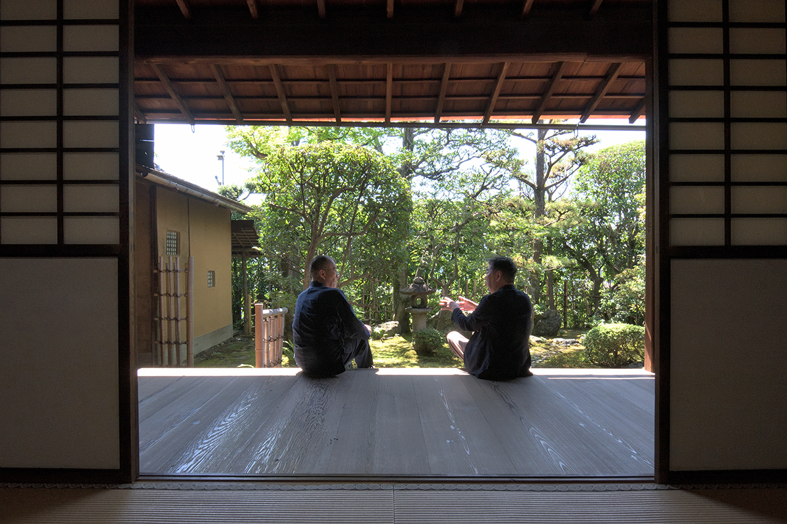
В Киото чай чаще всего встречается в виде матчевых десертов, а настоящий густой или жидкий матча пробуют немногие. Чтобы понять, откуда взялась чайная церемония с её строгими правилами, стоит начать с крошечной комнаты в два татами, построенной Сэн-но Рикю.
Национальное сокровище
Тайан: два татами Сэн-но Рикю
У кофе, чёрного и китайского чая нет правил, которые возвели бы питьё в целый путь. Нет у них и особой комнаты. А в Японии, где земли мало и дома тесные, для чая строили отдельное помещение, которым пользовались только во время чаепития. Словарь определяет чайную комнату как зал для чайных собраний: стандартом были четыре с половиной татами, а самые маленькие доходили до полутора. Почему японскому чаю понадобилось собственное пространство, лучше всего видно в Оямадзаки.
Этот городок стоит к юго-западу от Киото, у подножия горы Тэнно, на границе с префектурой Осака. Прямо напротив станции JR Ямадзаки, в 20 минутах езды от вокзала Киото, находится храм Мёки-ан, а в нём чайная Тайан.
Чайных в Японии не счесть, но национальным сокровищем признаны только три. Одна стоит в монастыре Дайтоку-дзи в Киото, другая когда-то тоже была в Киото, а теперь находится в Инуяме. Тайан среди них особенная: это единственная чайная, которую, по преданию, построил сам Сэн-но Рикю.
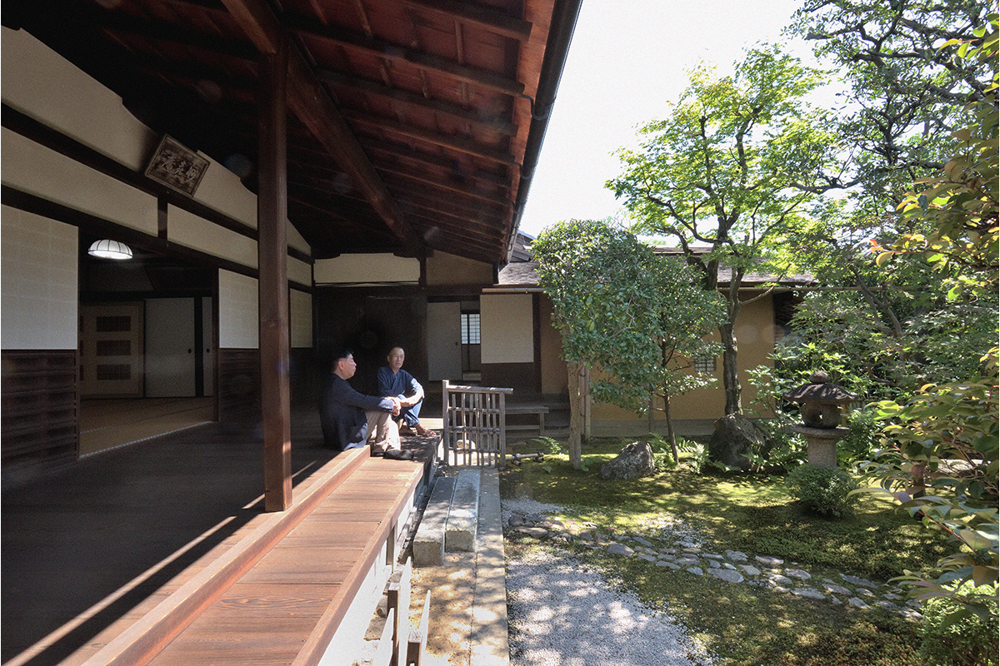
Из ворот станции нужно повернуть налево, подняться по нескольким каменным ступеням, и вы у входа. Храм школы Тофуку-дзи основали в конце периода Муромати, и с третьим настоятелем, по преданию, дружил Рикю. Внутри сразу открывается маленький сад. После знаменитых храмов Киото здесь удивительно тихо и скромно. Сначала гостей усаживают на солнечную веранду, и настоятель рассказывает, как всё устроено.
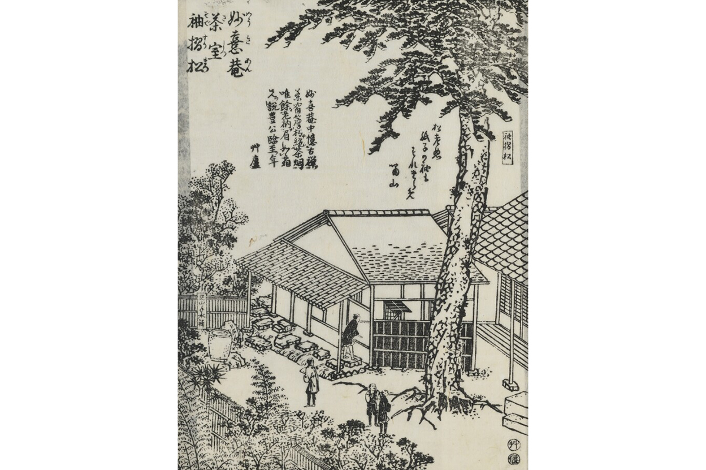
Чайная примыкает к южной стороне зала сёин, который признан важным культурным достоянием. Крыша двускатная, крыта тонкой деревянной дранкой. Внутрь заходить нельзя, поэтому смотреть приходится через окно рядом с низким входом. Освещения нет, и в полумраке разглядеть комнату получается не сразу.
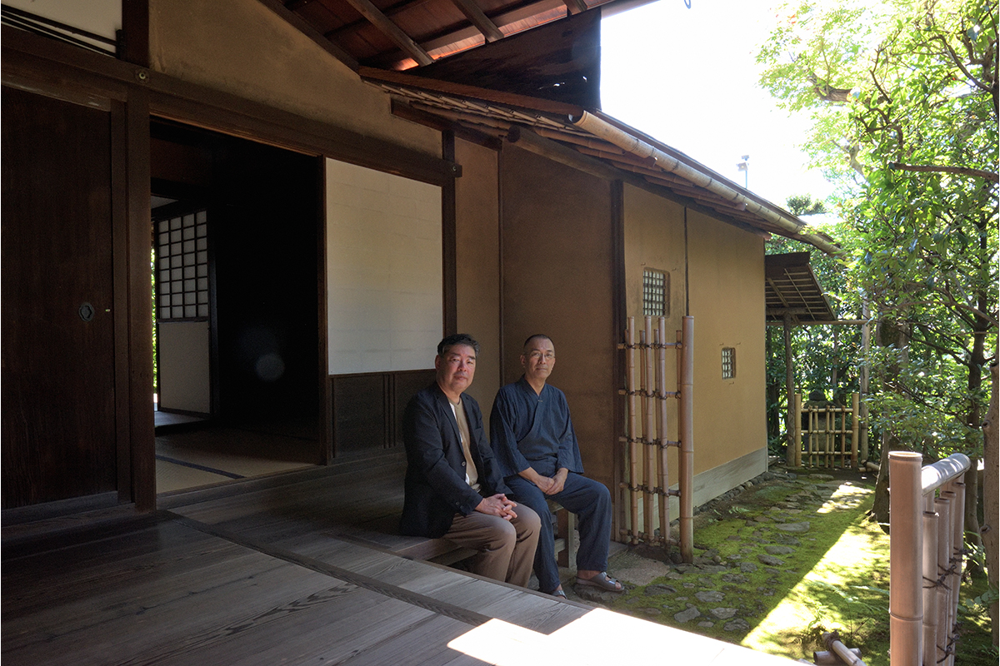
Площадь Тайан всего два татами. До Рикю обычной считалась комната в четыре с половиной, а он сократил её вдвое. Изнутри, если включить воображение, она кажется просторнее, чем ожидаешь. Низкий вход нидзиригути здесь заметно больше, чем в других чайных. Потолок около 1,8 метра, почти вровень с ростом взрослого. В углу вырезан очаг, у которого хозяин готовит чай. Рикю, говорят, был крупным человеком, и гость, сидя напротив него в такой тесноте, должен был ощущать немалое давление.
Окна здесь большие, а основой для их решётки послужил тростник с реки Ёдо. Считается, что именно Рикю первым прорезал окна в чайной и впустил в неё приглушённый свет. Этот полусвет, глиняные стены цвета ржавчины и вмешанные в глину длинные волокна соломы создают то настроение скромной простоты, которое называют ваби.
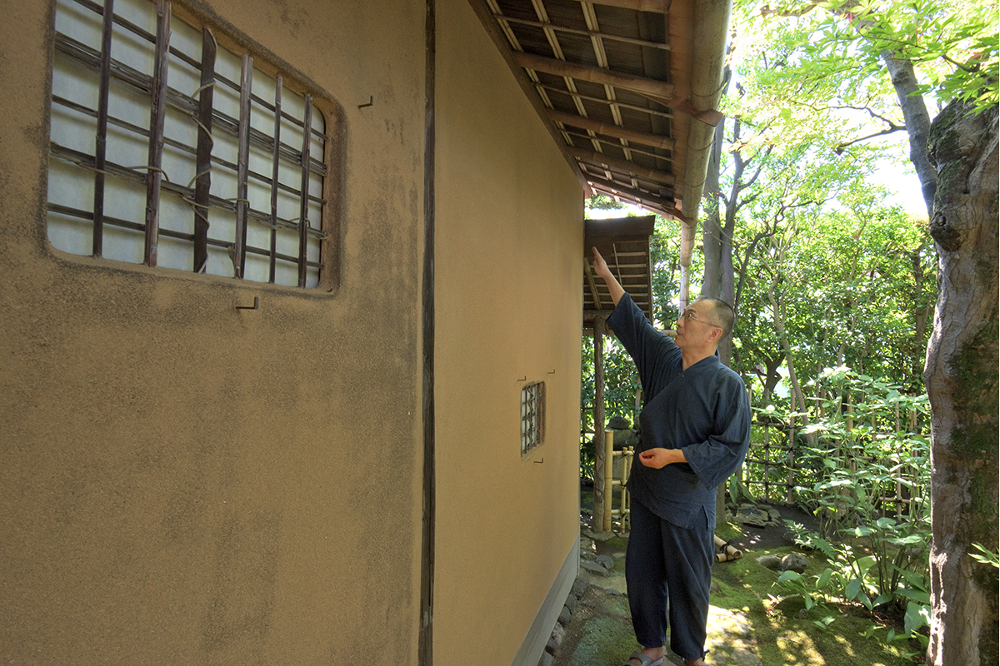
Ниша токонома узкая, но её угловой столб утоплен в глиняную стену, и от этого пространство кажется шире. Главное новшество было в убранстве ниши. Прежде в ней было принято выставлять роскошную утварь с материка, а Рикю повесил простой свиток, поставил бамбуковую вазу и одинокий скромный цветок. Над головой потолок частично скошен, доски на нём, похоже, из криптомерии Китаяма. Столб ниши тоже из криптомерии, без всякой отделки, а бамбук по всей комнате подчёркивает простоту. Всё это в маленьком пространстве стало для Рикю важным шагом к чаю ваби.
Хидэёси, разбив лагерь в Ямадзаки во время битвы у горы Тэнно, пригласил Рикю и велел построить ему чайную. Там Рикю и угощал его чаем. Потом чайную разобрали и перенесли в Мёки-ан. Можно представить, о чём говорили два человека над одной чашей: Хидэёси хвастался победами, порой оглядывался на свои поступки и строил планы, а Рикю, быть может, отвечал ему наставлением. Для такого разговора и нужна была комната, отрезанная от внешнего мира.
Как устроены два татами
Ниша шириной около 1,21 метра, потолок около 1,6 метра, ниже обычного. Очаг около 40,9 сантиметра: его сделали до того, как размер закрепили в 42,4. За раздвижной перегородкой есть ещё комната в один татами, и как ею пользовались, единого мнения нет.
Вход нидзиригути высотой около 79 и шириной около 70 сантиметров. Позднее такие входы делали ещё меньше, так что здесь, видимо, была первая проба. Вместо веранды появился навес над земляной площадкой, и сад сблизился с домом.
Потолок разделён на три части. Над почётным местом и местом хозяина он плоский, над остальным скошен, и в середине комнаты получается высокая часть. Рейки и стропила из бамбука придают лёгкость. Окна все разного размера: одни с открытой решёткой из тростника, другие с рейками. Они не столько освещают, сколько создают полумрак и полусвет, и, видимо, свет менялся вместе с ходом чайного собрания.
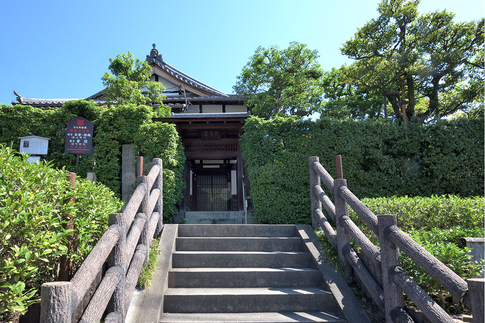
Храм Мёки-ан, чайная Тайан
- Адрес
- префектура Киото, уезд Отокуни, Оямадзаки, Оямадзаки Рюко, 56
- Телефон
- +81 75-956-0103
- Часы работы
- только по записи, воскресенье утром, если в храме нет служб (10:30 или 11:30)
- Цены / Вход
- 1000 иен
- Как добраться
- напротив станции JR Ямадзаки, около 20 минут от вокзала Киото
- Даты
- заявку присылают почтовой открыткой с оплаченным ответом не позже чем за месяц; указывают 2–3 желаемые даты, адрес, имя и телефон, число гостей (от 1 до 10; группы только из школьников не принимают)
Святилище
Сэймэй: где жил Рикю
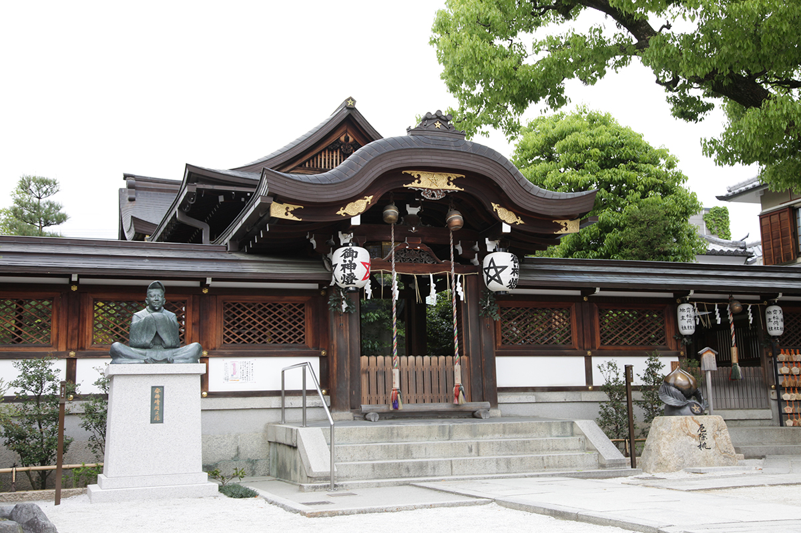
Рикю погиб по приказу Хидэёси, это известно всем. Причины до сих пор спорны, но то, что его голову выставили у моста Итидзё-модорибаси, бесспорно. Рядом с мостом стоит святилище Сэймэй-дзиндзя, связанное с Абэ-но Сэймэем (921–1005), придворным мастером гаданий и магии оммёдо. Мало кто знает, что когда-то на его территории была усадьба Рикю.
Сохранились записи о том, что эту усадьбу подарил Рикю сам Хидэёси и что он часто сюда приходил. Это странно: рядом стоял Дзюракудай, дворец и резиденция Хидэёси, и логичнее было бы Рикю ходить к правителю. Воины той эпохи очень дорожили своим положением, и визиты регента к простому чайному мастеру были делом почти неслыханным. Хотел ли он пить чай на воде из колодца святилища? Вряд ли всё так просто. Тайан тоже была подарком Хидэёси, и похоже, что он велел построить чайную и в этой усадьбе. Не будь Хидэёси, Рикю, вероятно, не прославился бы как чайный мастер, но и не погиб бы, не завершив задуманного.
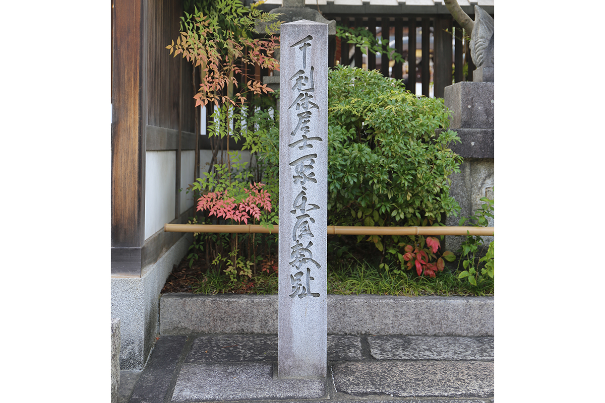
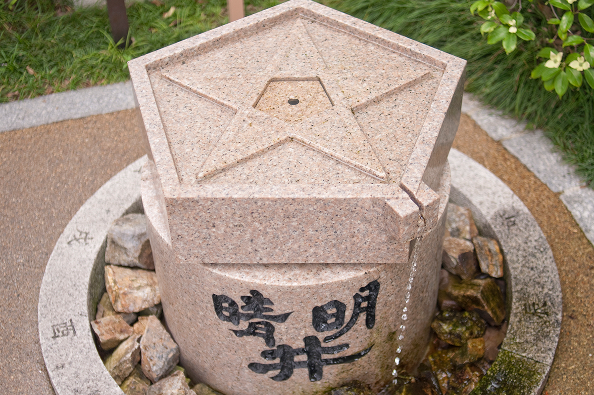
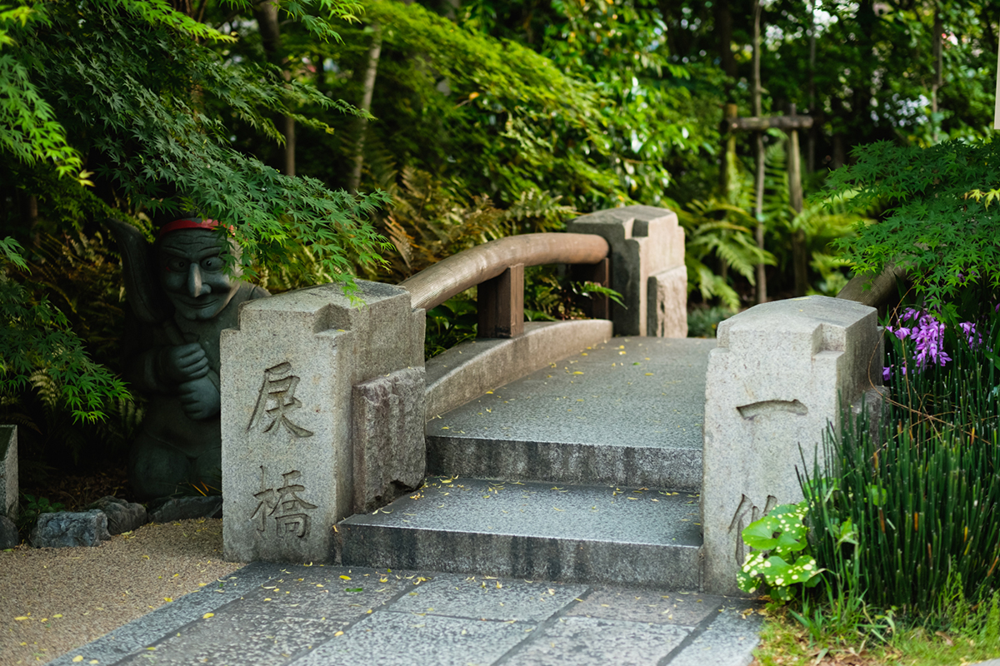
Святилище Сэймэй-дзиндзя
- Адрес
- префектура Киото, Киото, район Камигё, Сэймэй-тё, 806
- Телефон
- +81 75-441-6460
- Часы работы
- 9:00–17:00
- Цены / Вход
- бесплатно
Керамика
Раку: чаша, которую вывел в свет Рикю
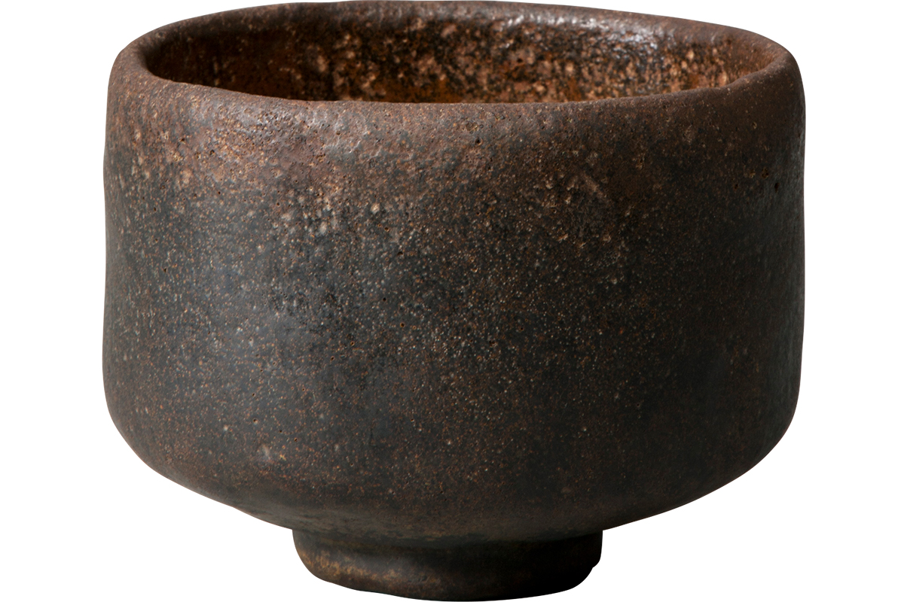
Недалеко от усадьбы Рикю и дворца Дзюракудай жила семья Раку. При жизни Рикю их посуду называли «имаяки», то есть «нынешняя керамика». Но в свет чаши основателя рода Тёдзиро (умер в 1589 году) вывел именно Рикю. Они полюбились Хидэёси, и тот, как рассказывают, пожаловал семье печать с иероглифом «раку» из названия дворца Дзюракудай. По другой версии, раз усадьба Рикю стояла рядом с дворцом, чаши звали «дзюраку-яки», откуда и пошло имя.
Корни раку неожиданные: трёхцветная глазурь эпохи Мин из китайской провинции Хэнань. Это яркие жёлтые, фиолетовые и зелёные изделия, совсем непохожие на привычные чёрные и красные чаши раку. В 1576 году семья жила и обжигала посуду в Киото, по соседству оказался Рикю, и под его влиянием стиль переменился и стал воплощением его вкуса к ваби. Без этой встречи история чаши раку могла бы пойти совсем иначе.
Посмотреть работы всех поколений семьи можно в Музее Раку. В 2022 году здесь прошла выставка о том, как формы, заданные Рикю, создавались и передавались дальше.
Музей Раку
- Адрес
- префектура Киото, Киото, район Камигё, Абуранокодзи-дори Итидзё-сагару
- Телефон
- +81 75-414-0304
- Часы работы
- 10:00–16:30
- Выходные
- понедельник (кроме праздников)
- Цены / Вход
- в 2022 году 1100 иен, студенты 900, старшеклассники 500
Чайные школы
Три дома Сэн
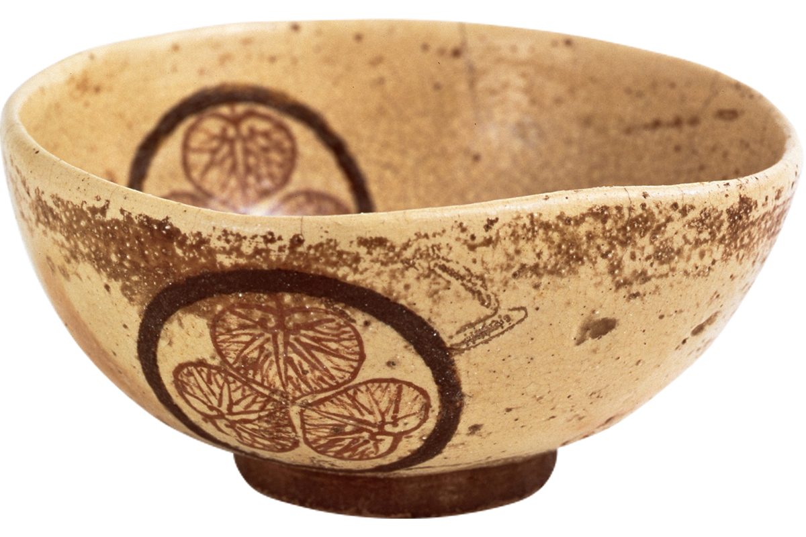
Кто станет наследником, вопрос важный и трудный в любом знатном доме. После смерти Рикю его род рассеялся, но Хидэёси простил старшего сына, тот вернулся в Сакаи и возглавил дом. Детей у него не было, и прямая линия Рикю прервалась. Дом Сэн продолжил другой потомок: пасынок Рикю, сын его второй жены, который был ещё и его зятем.
Позже дом Сэн разделился на три ветви: Омотэсэнкэ, Урасэнкэ и Мусякодзисэнкэ. Корень у них один, но правила и утварь чуть различаются, и все три школы живут до сих пор. В Киото чайная церемония настолько обычное дело, что на вопрос «А вы в какой школе?» называют одну из трёх.
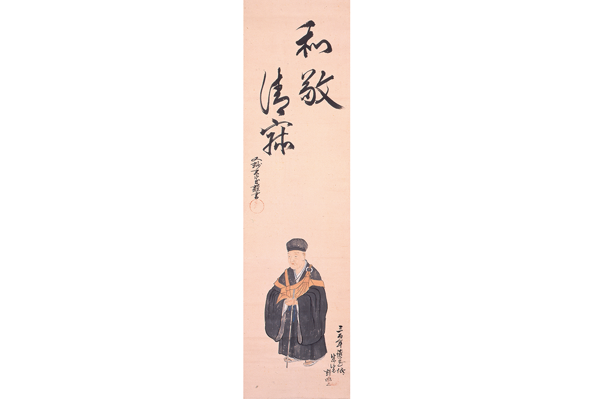
Места, связанные с тремя домами, тоже можно обойти. В 2022 году в зале Китаяма школы Омотэсэнкэ прошла выставка о правнуке Рикю, четвёртом главе Омотэсэнкэ, и о том, как сложились три дома. В музее Тядо Сирёкан, при центре Урасэнкэ, в том же году показывали утварь, каллиграфию и живопись глав школы и разницу в их вкусах.
Зал Китаяма школы Омотэсэнкэ
- Адрес
- префектура Киото, Киото, район Кита, Камигамо Сакураи-тё, 61
- Телефон
- +81 75-724-8000
- Часы работы
- 9:30–16:30
- Выходные
- понедельник (если праздник, то вторник)
- Цены / Вход
- в 2022 году 1200 иен с чаем, студенты 1000, старшеклассники 500
Музей Тядо Сирёкан
- Адрес
- префектура Киото, Киото, район Камигё, Хорикава-дори Тэраноути-агару, Тэраноути-татэ-тё, 682, центр Урасэнкэ
- Телефон
- +81 75-431-6474
- Часы работы
- 9:30–16:30
- Выходные
- понедельник (если праздник, то вторник), 2-й и 4-й вторник
- Цены / Вход
- в 2022 году 1000 иен, студенты 600, школьники 350; чай 500 иен отдельно от входа
Бэнто
Сёкадо: коробка художника на обеденном столе
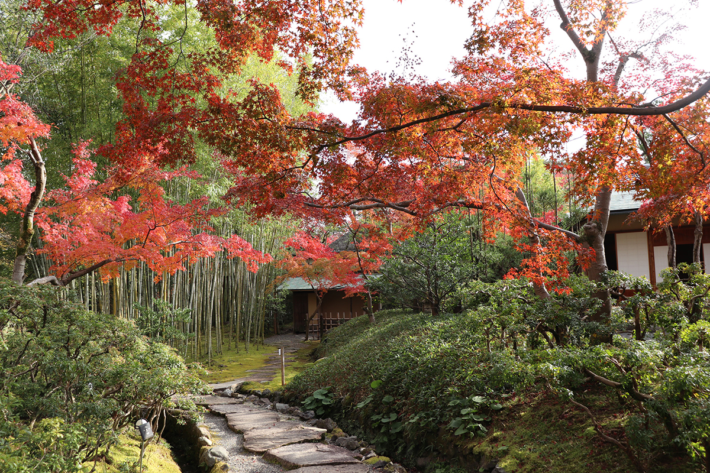
Рядом с бэнто макуноути самый известный обед в коробке это бэнто Сёкадо. Мало кто знает, что и он вырос из чайной культуры, а корни его в городе Яхата к югу от Киото. Сёкадо Сёдзё (1584–1639), настоятель обители Такимото-бо при святилище Ивасимидзу Хатимангу, считался одним из трёх великих каллиграфов эпохи Канъэй и был известен как чайный мастер. Подглядев, как крестьяне раскладывают семена по ящику с перегородками, он сделал себе квадратную коробку для красок и кистей.
Спустя несколько веков Тэйити Юки (1901–1997), основатель ресторанов Kitcho и чайный мастер, стал подавать в такой коробке еду. В 1933 году на чайном собрании в Осаке он закрыл её крышкой и превратил в бэнто, и с тех пор его называют бэнто Сёкадо.
Сегодня в Яхате есть сад и музей Сёкадо, а при нём ресторан Kyoto Kitcho, где по предварительной записи можно попробовать это бэнто. Прогулка по саду, который называют одним из лучших японских садов, вещи, связанные с Яхатой, в музее и обед, в котором простота поднята до изысканности: снова всё начинается с чая.
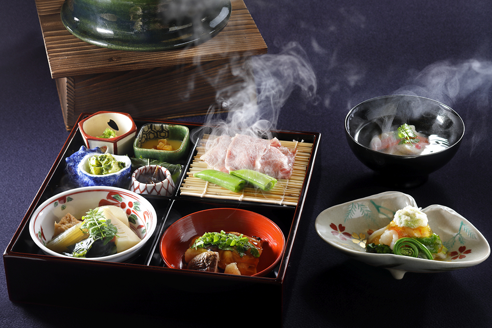
Сад и музей Сёкадо, Kyoto Kitcho
- Адрес
- префектура Киото, Яхата, Яхата Оминаэси, 43-1
- Телефон
- +81 75-981-0010
- Часы работы
- 9:00–17:00
- Выходные
- понедельник (если праздник, то вторник)
- Цены / Вход
- сад 300 иен, студенты и старшеклассники 220, школьники 150; музей от 400 иен, зависит от выставки
Коллекционеры
Почему предприниматели влюблялись в чай
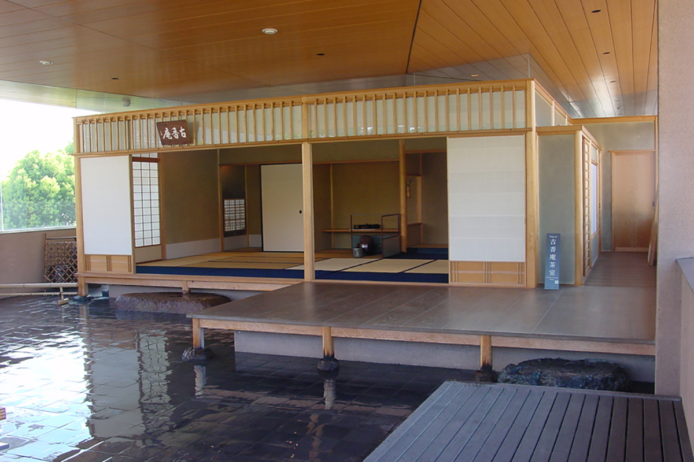
В Киото есть несколько музеев чайной утвари и других вещей, связанных с чаем, и почти все показывают собрания предпринимателей. Ответ на вопрос, почему бизнес так тянулся к чаю, снова ведёт в Тайан. Чайную, скорее всего, построили посреди решающей битвы, чтобы успокоить разгорячённое сердце, вспомнить ход сражения и обдумать следующий шаг. Предприниматели наших дней каждый день ведут свои сражения, как полководцы той эпохи. В чае они находили минуту покоя и время подумать, а потом, как и воины, увлекались утварью. К тому же считается, что развитый вкус помогает и в делах.
Вот три музея, построенных на таких собраниях. Музей Хосоми с чайной комнатой «Кокоан» известен коллекцией живописи школы Римпа и регулярно устраивает выставки японского искусства. В Музее Номура в 2022 году прошла выставка к 500-летию Рикю о том, как передавался его чай. Музей Китамура стоит рядом с чайным павильоном и садом «Сикунси-эн».
Музей Хосоми
- Адрес
- префектура Киото, Киото, район Сакё, Окадзаки Сайсёдзи-тё, 6-3
- Телефон
- +81 75-752-5555
- Часы работы
- 10:00–17:00
- Выходные
- понедельник (если праздник, то вторник)
- Цены / Вход
- зависит от выставки
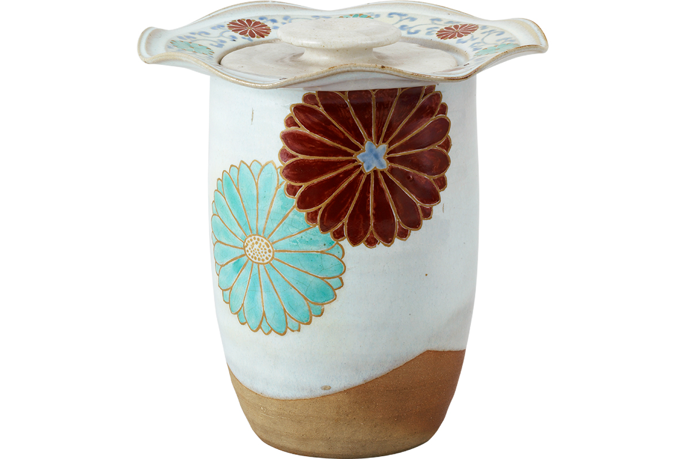
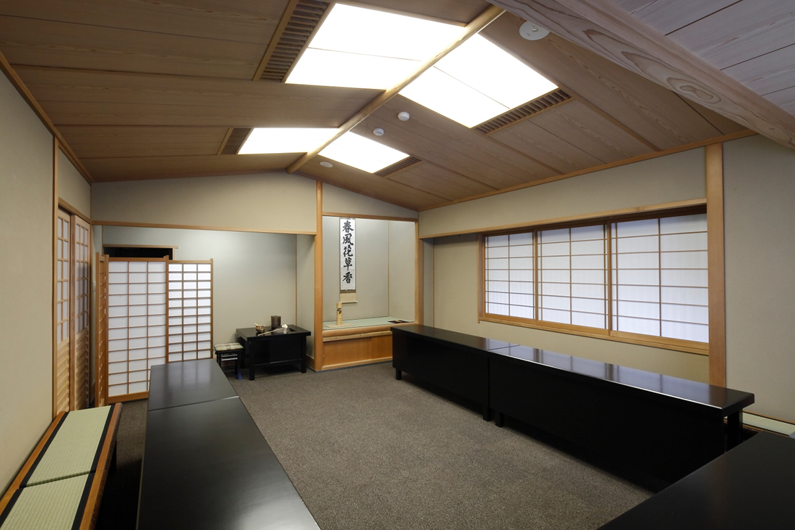
Музей Номура
- Адрес
- префектура Киото, Киото, район Сакё, Нандзэндзи Симокавара-тё, 61
- Телефон
- +81 75-751-0374
- Часы работы
- 10:00–16:30
- Выходные
- понедельник (если праздник, то вторник)
- Цены / Вход
- в 2022 году 800 иен, студенты и старшеклассники 300
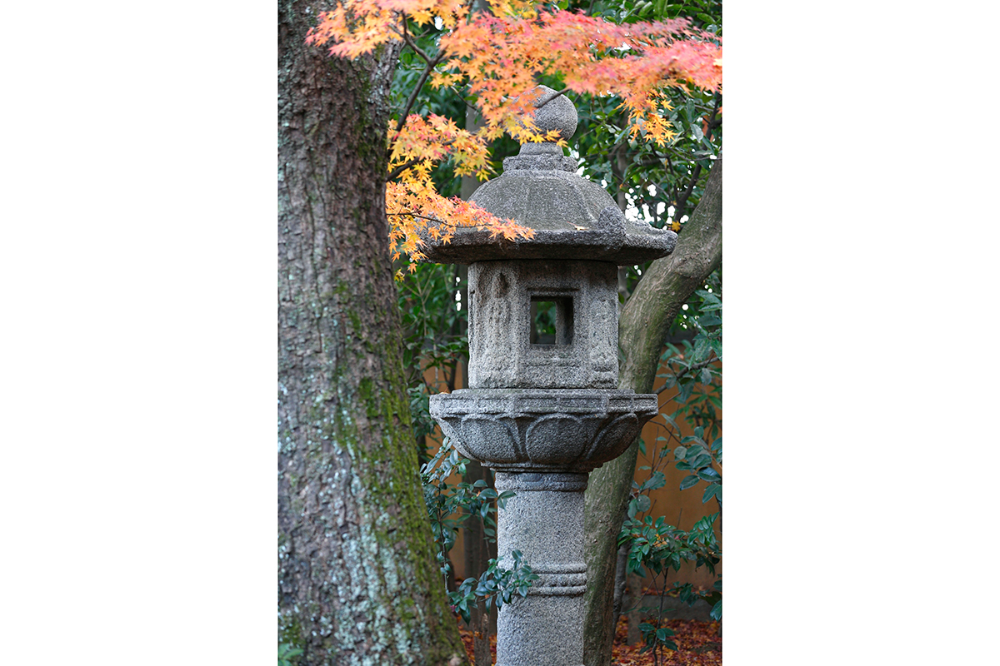
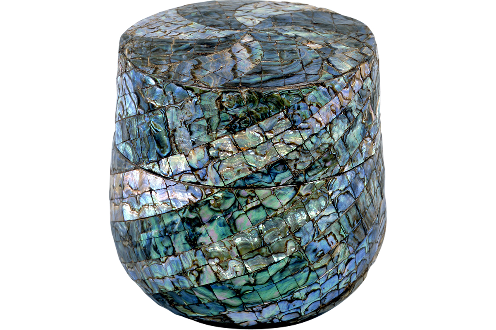
Музей Китамура
- Адрес
- префектура Киото, Киото, район Камигё, Каварамати Имадэгава-минами Хитосудзимэ Хигаси-ири, Кадзии-тё, 448
- Телефон
- +81 75-256-0637
- Часы работы
- 10:00–16:00
- Выходные
- понедельник (если праздник, то открыто), день после праздника
- Цены / Вход
- в 2022 году 600 иен, студенты и школьники 400
Фото: Ko Miyaji.